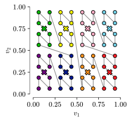

3 Mapping neural fields to lower-dimensional embeddings
In the previous chapter, we have established a simple toy model for a neural field in \(p\) dimensions, and have shown how it can be embedded in \([0,1]^p\). In this chapter, we discuss in-depth what types of mappings can be used to map the \(p\)-dimensional space to \([0,1]\), and in particular we study the case \(p=2\). Before getting into too much detail, let us give some insight as to why this problem is not trivial.
3.1 Population dynamics: an introductory example of a 1D embedding
3.1.1 Embedding a finite number of populations in \([0,1]\)
Let us for a moment consider another type of model for networks of neurons, that of multiple homogeneous population dynamics, describing how \(N_\text{pop}\) different populations interact with each other. These types of models emerge, for example, when networks of neurons exhibit a finite number of “neuron types”. We then group neurons of the same type, and make the approximation that they have identical potentials and the same interaction weights with other neurons. As a consequence, every population then represents a homogeneous population of identical neurons.
This results in writing population dynamics with the same equation as a finite network of neurons. However, the equation already represents the \(N \to \infty\) limit. We write the potential of the populations \(H_a(t)\) and the population connectivity \(\tilde J_{ab}\), where \(a,b \in \{1, \cdots, N_\text{pop}\}^2\) in Equation 3.1.
\[ \dot H_a(t) = -H_a(t) + \sum_{b=1}^{N_\text{pop}} \tilde J_{ab} \phi(H_b(t)) \tag{3.1}\]
We don’t show the derivation of population dynamics here (see [1], chapter 12.3 for a detailed analysis), but we point out the implicit scaling behavior of \(\tilde J_{ab}\). Letting \(i\) be a neuron of population \(a\) and \(j\) be a neuron of population \(b\), the connectivity between the two neurons is \(J_{ij}\), and the population connectivity scales with the number of neurons in the presynaptic population \(|b|\). Furthermore, we make the reasonable assumption that \(J_{ij}\) scales as \(J^0_{ij} / N\), where \(J^0_{ij} \sim \mathcal{O}(1)\). We then have
\[ \tilde J_{ab} = \frac{|b|}{N} J^0_{ij}. \]
As \(N\to\infty\), the ratio \(\tfrac{|b|}{N}\) converges to a constant \(p_b\), the probability of the population, normalized such that \(\sum_{a=1}^{N_\text{pop}} p_a = 1\). It expresses the probability of uniformly sampling a neuron belonging to population \(b\). In effect, \(p_b\) can be interpreted as the “weight” of the population.
So far, we have not considered that the populations are embedded in some abstract space; but the notion of population weights gives rise to the obvious embedding in \([0,1]\) given by the cumulative sums of the population weights, illustrated in Figure 3.1. We define (somewhat informally) the connectivity kernel \(w(\alpha, \beta) = J^0_{ab}\) for \(\alpha, \beta\) in the regions corresponding to populations \(a\) and \(b\) respectively.1
Defining the neural field \(H(\alpha, t) = H_a(t)\), we can write a “neural field equation” on the \([0,1]\) space.
\[ \begin{aligned} \partial_t H(\alpha, t) &= -H(\alpha, t) + \int_0^1 w(\alpha, \beta) \phi(H(\beta, t)) \mathrm d\beta \\ &= -H(\alpha, t) + \sum_{b=1}^{N_\text{pop}} p_b w(\alpha, b) \phi(H_b(t)) \\ \iff \partial_t H_a(t) &= -H(a, t) + \sum_{b=1}^{N_\text{pop}} p_b w(a, b) \phi(H_b(t)) \\ &= -H(a, t) + \sum_{b=1}^{N_\text{pop}} p_b J^0_{ab} \phi(H_b(t)) \\ &= -H(a, t) + \sum_{b=1}^{N_\text{pop}} \tilde J^0_{ab} \phi(H_b(t)) \end{aligned} \]
We hereby showed (having taken many writing liberties, but this is just to give an idea) how the neural field reduces back to the original population dynamics, which was in itself already the \(N\to\infty\) limit of the network. The case of multi-population dynamics therefore shows a trivial example of an embedding in \([0,1]\).
3.1.2 Population dynamics with an infinite number of populations
When taken in isolation, the previous developments might sound a little bit silly, though they serve to give a feeling for the problem at hand, and a motivation for the rest of this work. For a finite number of populations \(N_\text{pop}\), the population dynamics is well-defined; however, what happens as \(N_\text{pop} \to \infty\) ? The core of the question lies in the fact that we can easily enumerate a finite number of populations, but the sum \(\sum_{b=1}^{N_\text{pop}}\) must have a clearly defined interpretation when this number tends to infinity.
In light of the toy model presented in Chapter 2, we can reinterpret the density \(\rho\) of the neural field equation. Every point \(\boldsymbol{z} \in \mathbb R^p\) (let us consider \(p=2\) in the following) describes an infinite population of homogeneous neurons, associated with a probability (density) \(\rho(\boldsymbol{z})\). Therefore, in order to write an equivalent neural field in \([0,1]\), we need a way to enumerate the populations. This is done using a mapping \(S : [0,1]^2 \mapsto [0,1]\), where we cover the \([0,1]^2\) space by following the order assigned to the populations in the image \([0,1]\).
Additionally, the notion of population dynamics helps give another interpretation of the grid integration method given in Section 2.2.2. When we discretize the \([0,1]^2\) space, we are effectively performing a coarse-graining approximation and simulating a finite number of populations. For every bin localized by \((v_1, v_2)\), we are sampling the connectivity kernel \(w_U(\cdot, (v_1, v_2))\) and 2D neural field \(h_U((v_1, v_2), t)\) (see Figure 3.2). In the rest of the chapter, we refer to these 2D bins as “square populations”, and to the corresponding 1D bins obtained by the mapping \(S\) as “segment populations”.
For a finite number of populations \(N_\text{pop}\), applying a bijective mapping \(S\) will evidently give an equivalent neural field, because the connectivity matrix is permutation-invariant, and the resulting connectivity matrix \(J_{S(a),S(b)}\) will therefore give equivalent dynamics. As we increase \(N_\text{pop}\) by taking finer and finer grids, the image of the grids defines a sequence of mappings \(S^n: \text{grid in}\ [0,1]^2 \mapsto \text{grid in}\ [0,1]\), which we aim to study in the rest of this chapter. The main question is:
How do we define a sequence of mappings \(S^n\) such that the limiting \(S : [0,1]^2 \mapsto [0,1]\) can express a 1D neural field with identical dynamics ?
3.2 Defining the neural field in \([0,1]\)
We start by writing the neural field equation in the \([0,1]\) space. For \(\lambda: [0,1]^2 \to [0, \infty]\) a measurable function (e.g. the Lebesgue measure, which is nothing but the uniform probability distribution), we let the composition \(\lambda \circ S^{-1}\) define a measure on \([0,1]\), which keeps track of how 2D surfaces are transformed to (possibly disjoint) 1D segments through the mapping \(S\).
The connectivity kernel \(\tilde w\) defines the interactions between the populations in the \([0,1]\) embedding, which we define relating to the kernel \(w_U\) on \([0,1]^2\), defined in Section 2.5 as:
\[ \tilde w(\alpha, \beta) = w_U(S^{-1}(\alpha), S^{-1}(\beta)) \tag{3.2}\]
Defining the initial condition for the 1D neural field as \(\tilde h(\alpha, t=0) = h_U(S^{-1}(\alpha), t=0)\), we have fully defined the equation of evolution in the one-dimensional embedding in Equation 3.3.
\[ \partial_t \tilde h(\alpha, t) = -\tilde h(\alpha, t) + \int_{[0,1]} \tilde w(\alpha, \beta) \phi(\tilde h(\beta, t)) \left[\lambda \circ S^{-1}\right](\mathrm d\beta) \tag{3.3}\]
The definition of the connectivity kernel in Equation 3.2 might seem innocent, but the key element here is the inverse \(S^{-1}\). We recall that in the toy model, the original connectivity kernel is written as \(w(\boldsymbol{z}, \boldsymbol{y}) = \sum_{\mu=1}^p \tilde \phi(y_\mu) z_\mu\). This kernel is highly regular, by which we mean that, by its continuity in each of its arguments, populations nearby in the \(\mathbb R^p\) will have similar input weights. Since it is also differentiable, we can write this as a Taylor expansion in the first argument :
\[ \begin{aligned} w(\boldsymbol{z} + \boldsymbol{\epsilon}, \boldsymbol{y}) &= w(\boldsymbol{z}, \boldsymbol{y}) + \sum_{\mu=1}^p \epsilon_\mu \frac{\partial w}{\partial z_\mu} + \mathcal{O}(\lVert{\boldsymbol{\epsilon}}\rVert^2) \\ &= w(\boldsymbol{z}, \boldsymbol{y}) + \sum_{\mu=1}^p \epsilon_\mu \phi(y_\mu) + \mathcal{O}(\lVert{\boldsymbol{\epsilon}}\rVert^2) \\ &\approx w(\boldsymbol{z}, \boldsymbol{y}) \end{aligned} \]
When we do the change of variables with the CDF, we don’t encounter problems because the Gaussian (inverse) CDF is differentiable and its derivative is continuous;2 therefore \(w_U(\boldsymbol{v}, \boldsymbol{u}) = w(\textrm{CDF}^{-1}(\boldsymbol{v}), \textrm{CDF}^{-1}(\boldsymbol{u}))\) is still highly regular.
For these reasons, we can see why the composition of \(w_U\) with a possibly non-differentiable mapping \(S\) might be problematic. Since the only thing we know about \(S\) is that it is measurable and bijective, there is no guarantee that the regularity (continuity and the differentiability) of the kernel is conserved through composition with the mapping \(S\).
3.3 Mappings of \([0,1]^2\) to \([0,1]\)
3.3.1 The search for differentiable mappings
We start our search of mappings by attempting to find a mapping \(S\) that is differentiable. The easiest example of such a mapping would be a linear projection, for instance, \(P(v_1, v_2) = v_1\). This mapping is obviously continuous and differentiable in both components, and surjectively maps the unit square to the unit segment. However, the obvious problem with this approach is that linear projections are not invertible. Hence, should we nevertheless define an inverse \(P^{-1}\) that computes the preimage of \(\alpha \in [0,1]\), we have that
\[ P^{-1}(\alpha) = \{(\alpha, v_2)\ |\ v_2 \in [0,1] \}. \]
In other words, \(P^{-1}(\alpha)\) defines a vertical line in the \([0,1]^2\) embedding. When we then take the composition \(w_U \circ P^{-1}\), the “locality” is destroyed, in the sense that the same population \(\alpha\) in the 1D embedding will “sense” all the connectivity kernels on the vertical line.
A more sophisticated attempt, in the spirit of Section 2.5, might be to consider the joint cumulative function
\[ \alpha = \mathrm{CDF}(z_1, z_2) = \int_{-\infty}^{z_1} \int_{-\infty}^{z_2} \rho(y_1, y_2) \mathrm dy_1 \mathrm dy_2. \]
However, this again fails because the joint cumulative function is not bijective, and isolines of the CDF define continuous curves in the uniform embedding space \([0,1]^2\).3
Perhaps these examples are a bit too naive, and we need to look for more complex mappings. We might ask the question of whether a diffeomorphism (a differentiable bijection with a differentiable inverse) even exists between the unit square and the unit segment. Unfortunately, results from topology give a negative answer, and even worse, it can be shown that there is no homeomorphism (a continuous bijection with continuous inverse) between the unit square and the unit segment. This is stated by Netto’s theorem, which imposes continuous bijections to conserve the dimensionality between the domain and the image.
Figure 3.3 shows a visual representation of Netto’s theorem. The 3-way intersection of the Venn diagram represents that functions which are both bijective (surjective and injective) and continuous do not exist. For the three remaining 2-way intersections, we annotate, without going into detail, the types of functions which they represent (see [2] for Cantor and Peano functions, [3] for Peano and Jordan functions).
3.3.2 Sequences of bijective mappings
3.3.2.1 Mappings as binary expansions
Previously, we motivated \(S\) as the limit of functions \(S^n\) acting on finer and finer grids. Let us consider \((v_1, v_2) \in [0,1]^2\). Given \(n \in \mathbb N\), we write a (truncated) binary expansion of \(v_1\) and \(v_2\).
\[ \begin{aligned} v^{(n)}_1 &= \sum_{l=1}^{n} b^1_l 2^{-l} = 0.b^1_1b^1_2\cdots b^1_{n} \iff b^1_l = \mathrm{Ind}\left\{2^{l-1}v_1 - \lfloor2^{l-1}v_1\rfloor \geq \frac{1}{2}\right\} \\ v^{(n)}_2 &= \sum_{l=1}^{n} b^2_l 2^{-l} = 0.b^2_1b^2_2\cdots b^2_{n} \iff b^2_l = \mathrm{Ind}\left\{2^{l-1}v_2 - \lfloor2^{l-1}v_2\rfloor \geq \frac{1}{2}\right\} \end{aligned} \tag{3.4}\]
The intuition and illustration Figure 3.4 behind this expansion is that we locate each component by recursively splitting the segment in two sub-segments of equal length. At every step, taking the left or right segments defines the sequence of binary digits.
We define the mapping \(S^n\) that takes the \(n\)-bit truncations \(v^{(n)}_1\) and \(v^{(n)}_2\) as input, and outputs a \(2n\) bit truncation \(\alpha^{(n)}\) of \(\alpha=S(v_1, v_2)\), where \(S\) is the \(n\to\infty\) pointwise limit of the sequence \(S^n\) (when the sequence \(S^n\) converges).
\[ \begin{aligned} S^n : &\{0, \tfrac{1}{2^n}, \cdots, 1-\tfrac{1}{2^n}\}^2 \mapsto \{0, \tfrac{1}{4^n}, \cdots, 1-\tfrac{1}{4^n}\} \\ &(v^{(n)}_1,v^{(n)}_2)=(0.b^1_1 b^1_2 \cdots b^1_n, 0.b^2_1 b^2_2 \cdots b^2_n) \mapsto \alpha^{(n)}=0.b_1 b_2 \cdots b_{2n} \end{aligned} \tag{3.5}\]
In general, each bit \(b_k\) of the image would be a binary function of the \(n\) bits of \(v_1\) and the \(n\) bits of \(v_2\), i.e. \(b_k = b_k(b^1_1, b^1_2, \cdots, b^1_n, b^2_1, b^2_2, \cdots, b^2_n)\). With this, we can formulate any mapping between sets of \(4^n\) distinct elements.
The intuition behind the use of \(2n\) bits for the image is that we take \(2^n \times 2^n = 4^n\) squares of size \(2^{-n} \times 2^{-n}\) in \([0,1]^2\), and map those to \(4^n\) segments of size \(4^{-n}\) in \([0,1]\). Informally, we map \(n+n\) bits onto \(2n\) bits.
In the following, we will restrict ourselves to mappings where the functions \(b_k\) are defined in such a way that each bit of the inputs \(v_1\) and \(v_2\) is used only once. Therefore, for each bit \(k\) of the output, there is a function \(b_k(b^{\mu_k}_{l_k})\) acting on only one bit of the input. \(\mu_k \in \{1,2\}\) is the input component and \(l_k \in \{1,\cdots,n\}\) the bit number corresponding to \(k\). Since this function is binary, the only allowed definitions are
- \(b_k(b^{\mu_k}_{l_k}) = b^{\mu_k}_{l_k}\) (identity),
- \(b_k(b^{\mu_k}_{l_k}) = 1-b^{\mu_k}_{l_k}\) (inversion),
- \(b_k(b^{\mu_k}_{l_k}) = 0\) (constant zero),
- \(b_k(b^{\mu_k}_{l_k}) = 1\) (constant one).
The constant functions are ignored, since they effectively just restrict the output domain to a subset of \([0,1]\); and since only \(2n\) bits are allowed for the output, they are a “waste” by ignoring information of the input. Because they don’t add information to the output (they just “swap” the values of the output bits at known locations), inversion functions are also not considered.
All this mathematical formalism expresses, in essence, that the mapping \(S^n\) is just a reordering of the input bits. \(S^n\) takes \(4^n\) points embedded in \([0,1]^2\), and reorders them onto \(4^n\) points in \([0,1]\).4
Therefore, there is a one-to-one mapping between the points on the square and the points on the segment, and the mapping \(S^n\) is bijective. In the following, we will, for ease of notation and when it is clear in the context, drop the index \(n\) when writing \(S^n\). This is often justified (particularly with the Z-mapping and Column mapping introduced later), because the finite-\(n\) truncations \((v_1^{(n)}, v_2^{(n)})\) result in finite truncations of \(S\), therefore \(S(v_1^{(n)}, v_2^{(n)}) = S^n(v_1^{(n)}, v_2^{(n)})\).
We will show in the rest of this thesis that this simple formulation is flexible enough to express mappings that have good properties such as “locality”, while being simple enough to help build intuitions.
3.3.2.2 A geometric view relating to curves in \([0,1]^2\)
With this formalism in mind, we give a geometric interpretation to the mappings \(S^n\). The core idea is that the populations in \([0,1]\) have a clear ordering to them, and we can enumerate them simply by their position in the embedding. Since we constructed \(S^n\) to be bijective, this enumeration traces a path in the corresponding populations of the \([0,1]^2\) embedding.
We illustrate this by introducing the “column” mapping.
\[ \alpha^{(n)} = C(v^{(n)}_1,v^{(n)}_2) = 0.b^1_1 b^1_2 \cdots b^1_n b^2_1 b^2_2 \cdots b^2_n \tag{3.6}\]
The intuition behind this mapping is that we enumerate the populations on a grid column by column, letting the index of the rows vary the fastest. We visualize this mapping in Figure 3.5, by coloring the square populations by the position of the corresponding \([0,1]\) population, and additionally drawing lines between the points to help guide the eye.
For finite \(n\), we write the inverse of the column mapping:
\[ \begin{aligned} v^{(n)}_1 = C^{-1}_1(\alpha^{(n)}) &= 0.b_1 b_2 \cdots b_n = \sum_{k=1}^n b_{k} 2^{-k} \\ v^{(n)}_2 = C^{-1}_2(\alpha^{(n)}) &= 0.b_{n+1} b_{n+2} \cdots b_{2n} = \sum_{k=1}^n b_{n+k} 2^{-k}. \end{aligned} \tag{3.7}\]
This way of enumerating the square populations might be familiar to people who have worked with numerical arrays. In such (contiguous) arrays, the values are laid out in memory in “row-major” order (C-style) or “column-major” order (Fortran-style); and we can go from the 1D memory representation to a 2D matrix representation by using “reshape” operations. Effectively, this is how this mapping is implemented in code, using numpy.ravel_multi_index (2D to 1D) and numpy.unravel_index (1D to 2D).
3.3.2.3 “Local” curves
Research in computer science and efficient data structures has given rise to other ways of storing 2-dimensional information in a 1-dimensional memory. A problem in GPU computing is that of texture locality: sampling textures often involves reading data corresponding to a small 2D region, and therefore to improve speed (minimize cache misses), the 2D data should be packed close together in the 1D memory. One way of ordering the 2D texture data in the 1D memory is by using the Z-order curve (also known as “Morton mapping”, and similar to the “Lebesgue curve” [3], chapter 6). In this way, points close in 1D tend to be tightly packed in 2D. We can define the Z-order curve (Z-mapping) in the following way:5
\[ \alpha^{(n)} = Z(v^{(n)}_1,v^{(n)}_2) = 0.b^1_1 b^2_1 b^1_2 b^2_2 \cdots b^1_n b^2_n = \sum_{k=1}^{n} b^1_k 2^{1-2k} + b^2_k 2^{-2k} \tag{3.8}\]
And its inverse is:
\[ \begin{aligned} v^{(n)}_1 = Z^{-1}_1(\alpha^{(n)}) &= 0.b_1 b_3 \cdots b_{2n-1} = \sum_{k=1}^n b_{2k-1} 2^{-k} \\ v^{(n)}_2 = Z^{-1}_2(\alpha^{(n)}) &= 0.b_2 b_4 \cdots b_{2n} = \sum_{k=1}^n b_{2k} 2^{-k}. \end{aligned} \tag{3.9}\]
Figure 3.6 is a visualization of the Z-mapping when \(n=2\), and shows how it is composed of the “Z” shapes giving it its name.
To illustrate this notion of locality, we take a few consecutive populations in 1D and show where the corresponding populations fall in the 2D embedding. This is done in Figure 3.7, in which we see that the Z-mapping seems to conserve locality from 1D to 2D: populations close in 1D seem to be close in 2D.
We also see that the Column mapping is not local in this sense, since there is a large variation along the vertical direction, which seems to always be “of order one”. This can be explained by looking at the expression for \(C^{-1}_2(\alpha^{(n)}) = 0.b_{n+1} b_{n+2} \cdots b_{2n}\) : small variations of the order of \(2^{-n}\) in the value of \(\alpha\) always result in variations of order one in \(C^{-1}_2\).e
Note that, in some sense, the Column mapping is local, from 2D to 1D. This can be seen from the definition of \(\alpha^{(n)}=C(v^{(n)}_1,v^{(n)}_2) = 0.b^1_1 b^1_2 \cdots b^1_n b^2_1 b^2_2 \cdots b^2_n\): small variations of order \(2^{-n}\) in \(v^{(n)}_1\) result in small variations also of order \(2^{-n}\) in \(\alpha^{(n)}\). Small variations of order \(2^{-n}\) in \(v^{(n)}_1\) result in even smaller variations also of order \(2^{-2n}\) in \(\alpha^{(n)}\) ! We therefore have two notions of locality: from 1D to 2D, and from 2D to 1D; and the Column mapping shows that they are not equivalent.
We argue that in our case only the notion of locality from 1D to 2D matters. In essence, the dynamics in the 2D embedding are already known, and we ask the question of whether it is possible to write an equivalent neural field in 1D. Without repeating the intuition given in Section 1.4, if neighbouring populations in 1D have similar potentials, then this allows us to write a neural field equation in \([0,1]\). Therefore we would like to have the property that populations close in 1D are (inversely) mapped to populations close in 2D, which already have similar potentials.
3.3.3 Sequence of mappings and their limit
3.3.3.1 Pointwise convergence of mappings
We now discuss what happens to the bijective mappings when \(n\to\infty\). For this, let us consider again the “random mapping” considered in the introduction Section 1.4. We discussed how this hypothetical mapping maps each position in \([0,1]^2\) into a “random position” in \([0,1]\). A finite-\(n\) formulation would be that the mapping corresponds to a random permutation of the bits, therefore, its limit is obviously not well-defined. For a given position of the input \((v_1,v_2)\), we would like that the image is stable in the \(n\to\infty\) limit.
\[ S^{n}(v_1, v_2) \xrightarrow{n\to\infty} \alpha =: S(v_1, v_2) \]
This is the condition of “pointwise convergence” of the mappings. Let us introduce another mapping, which will help to give a better intuition of what pointwise convergence means in our context. We define, for finite \(n\), the “anti-Z” mapping and its inverse:
\[ \begin{aligned} \alpha^{(n)} &= A(v^{(n)}_1,v^{(n)}_2) = 0.b^1_n b^2_n b^1_{n-1} b^2_{n-1} \cdots b^1_1 b^2_1 = \sum_{k=1}^{n} b^1_{n+1-k} 2^{1-2k} + b^2_{n+1-k} 2^{-2k} \\ \iff& \\ v^{(n)}_1 &= A^{-1}_1(\alpha^{(n)}) = 0.b_{2n-1} b_{2n-3} \cdots b_{1} = \sum_{k=1}^n b_{2(n-k)-1} 2^{-k} \\ v^{(n)}_2 &= A^{-1}_2(\alpha^{(n)}) = 0.b_{2n} b_{2n-2} \cdots b_{2} = \sum_{k=1}^n b_{2(n+1-k)} 2^{-k}. \end{aligned} \]
Figure 3.8 gives some insight into the problem of this mapping. For a fixed input \((v_1,v_2)\), we see that the output point position jumps around when \(n\) changes, and that these jumps seem to always be of order 1. The intuition behind pointwise convergence is that as \(n\) increases, the image of a point by \(S^n\) is continually refined.
Consider how \(\alpha^{(n)}\) fluctuates as the precision of the input increases with \(n \to \infty\). As we refine the input with fluctuations of order \(2^{-n}\), the output \(\alpha^{(n)} = b^1_n 4^{-1} + b^2_n 4^{-2} + b^1_{n-1} 4^{-3} + b^2_{n-1} 4^{-4} \cdots\) fluctuates (at least) with amplitude \(\sim 4^{-2}\) independantly of \(n\). Therefore the output never converges, and the mapping \(A^{n}\) is not pointwise convergent.
In our setting, how can we guarantee that the mappings are pointwise convergent? We need to show that small fluctuations in the input result in small fluctuations in the output. The binary expansion allows us to argue that for the sequence of mappings to be pointwise convergent, we need that the “least significant bits” (LSB, the bits to the right of the binary expansion) of the input are mapped to the LSB of the output. Conversely, the “most significant bits” (MSB, the bits to the left of the binary expansion) should be mapped to the MSB of the output.
We illustrate this with the Z-mapping, written in Equation 3.8. Corrections of order \(2^{-n}\) in \(v_1\) and \(v_2\) induce corrections of order \(2^{1-2n}\) and \(2^{-2n}\) in \(\alpha\) respectively. Therefore, it is easy to see that the Z-mapping is pointwise convergent as \(n\to\infty\). Similarly, the Column mapping in Equation 3.6 is also pointwise convergent, since as discussed Section 3.3.2.3 it has a locality of 2D to 1D.
3.3.3.2 Bijectivity in the \(n\to\infty\) limit
However, the behavior of the Column mapping and that of the Z-mapping are very different in the \(n\to\infty\) limit. Up until now, we have avoided this issue by considering the finite-\(n\) approximation of the mappings, which by construction is numerically bijective (that is, bijective on the discretization of \([0,1]^2\) and \([0,1]\) corresponding to finite \(n\)). We illustrate the infinite-\(n\) (numerically, large \(n\)) limit of these two mappings in Figure 3.9.
We see that the Column mapping converges to projection on \(v_1\), in other words, \(\alpha=C(v_1, v_2) = v_1\), showing that despite every \(C^{n}\) being numerically bijective, the limit of the sequence is not bijective. This becomes clear when looking at the binary expansion of \(C\) :
\[ \begin{aligned} C(v_1, v_2) &= \lim_{n\to\infty} C^{(n)}(v_1,v_2)\\ &= \lim_{n\to\infty} 0.b^1_1 b^1_2 \cdots b^1_n b^2_1 b^2_2 \cdots b^2_n \\ &= \lim_{n\to\infty} 0.b^1_1 b^1_2 \cdots \\ &= v_1 \end{aligned} \]
The limit is not bijective, because the bits of \(v_2\) are “lost” in the \(n\to\infty\) limit, and the inverse \(C_2^{-1}(\alpha)\) is not well-defined, since it “takes bits between \(\infty\) and \(2\infty\)”.
The Z-mapping seems to converge to a fractal curve. Numerically, there seems to be an infinite number of discontinuities, but the sizes of these discontinuities are, for the most part, small, so that on average they vanish as \(n\to\infty\). We won’t go further into detail about this, but this gives some intuition for the arguments presented in Chapter 4.
We finish this discussion on the limit of the sequence of mappings by asking if there are other mappings similar to the Z-mapping, in the sense that they are pointwise convergent and the limit is bijective. In an informal way, we established two conditions for this in the context of the mappings described in Section 3.3.2.1:
- condition of pointwise convergence: the LSB of the input must be mapped to the LSB of the output,
- condition of “no information loss”: the MSB of the input must be mapped to the MSB of the output.
These two conditions do not leave a lot of flexibility in the design of new mappings. We can evidently define mappings where we interleave the bits in a different order, such as \(0.b^2_1 b^1_1 b^2_2 b^1_2 \cdots\); or mappings where we reorder the \(k\) bits of the input, as in \(0.b^1_2 b^2_2 b^1_1 b^2_1 b^1_4 b^2_4 b^1_3 b^2_3 \cdots\), but the conditions restrict the reordering to be permutations of neighbouring bits. In essence, these mappings are not fundamentally different, and the Z-mapping can be seen as a “standard example” of the pointwise convergent mappings with bijective limits, which can be expressed as the permutation of binary digits.
3.4 Coarse-graining the neural field in \([0,1]\)
3.4.1 Naive simulations of the neural field on \([0,1]\)
In the continuation of the simulation methods established in the Section 2.2, we adopt a grid discretization scheme to simulate the neural field on \([0,1]\), as the grid naturally yields square populations, which can directly be used with the mappings introduced previously.6
We now address the elephant in the room: how do we numerically simulate a neural field defined on – what appears to be – a fractal curve? Naively, we could just proceed as follows :
- Create a grid of \(2^n \times 2^n = 4^n\) squares of size \(2^{-n} \times 2^{-n}\) in the \([0,1]\times[0,1]\) embedding. Each square is located by a position \(\boldsymbol{v_i} = (v_{1,i},v_{2,i}),\,i\in\{1,\cdots\,2^n\}\).
- Compute a discretized version of the 1D connectivity kernel \[ \begin{aligned} \tilde w(\alpha_i, \beta_j) &= \tilde J_{\alpha_i,\beta_j}\\ &= \tilde J_{S(i),S(j)}\\ &\stackrel{\text{def}}{=} J_{ij}\\ &= w_U(\boldsymbol{v_i}, \boldsymbol{v_j}) \end{aligned} \] at every square location (where we denote for simplicity of notation \(S(i)=S(\boldsymbol{v_i})\)).
- Simulate the neural field in \([0,1]\) on the corresponding discretized space with discretization step \(4^{-n}\).
The problem with this approach is that since the mappings are just permutations of the square populations, the resulting connectivity matrix \(\tilde J_{\alpha_i,\beta_j}\) is just a permutation of the rows and columns of \(J_{ij}\), and will therefore trivially lead to the identical neural field dynamics.
3.4.2 Coarse-graining the one-dimensional neural field
In some sense, we would like to “take into account” the fact that a mapping of the square populations has been performed. Simulations of the neural field equation on \([0,1]^2\) are done by using \(4^n\) square populations on a grid, but, as long as we have \(4^n\) corresponding segment populations in \([0,1]\), the dynamics will trivially be the same, independantly of the mapping \(S^n\). Therefore, we need a way to reduce the number of segment populations in \([0,1]\).
We do this using “coarse-graining”, in which we average \(2^n\) consecutive segment populations, each of length \(4^{-n}\), in order to obtain \(2^n\) coarse-grained segment populations, each of length \(2^{-n}\). This operation is illustrated in Figure 3.10.
Without coarse-graining, the mesh size along each spatial dimension is \(2^{-n}\) in 2D, but directly applying the mapping results instead in a mesh size of \(4^{-n}\) in 1D, which is much finer than the \(2^{-n}\) per dimension. However, after coarse-graining, the effective mesh size in 1D becomes \(2^{-n}\), which matches the 2D mesh size. Therefore, we are are not compensating the reduction of dimensionality by an increase in the numerical resolution.
A geometrical intuition we can give for the coarse-graining is how the averaging of the segment populations leads to sampling the connectivity kernel at the “average” positions in the \([0,1]^2\) embedding. In Figure 3.11, we colour-code the square populations corresponding to the segment populations before coarse-graining.

In summary, coarse-graining allows us to compare the dynamics of a neural field in \([0,1]^2\) simulated using \(2^n \times 2^n = 4^n\) square populations; with the dynamics of a neural field in \([0,1]\) simulated using \(2^n\) segment populations.
3.5 Simulations of neural fields in 3D, 2D and 1D
In this section, we show numerical simulations of the neural field in \([0,1]\), obtained from mapping higher-dimensional neural fields in \([0,1]^p,\,p\geq 2\). We see that the coarse-graining procedure works when applied from \([0,1]^2\) to \([0,1]\). Then, we demonstrate that it can be applied iteratively, to map from \([0,1]^3\) to \([0,1]^2\), and from \([0,1]^2\) to \([0,1]\).
3.5.1 Practical aspects of implementing the simulations of the one-dimensional neural field
We give a quick overview of the numerical details that go into implementing the methods presented above. Since the mappings (Z-mapping, Column mapping) can be written as binary expansions, they naturally lend themselves to numerical approximations. Furthermore, this is made especially easy since the mappings we defined are simply permutations of bits (in the \(n < \infty\) case), and so we can write a one-to-one correspondence between unsigned integers.
We have implemented the mappings as all inheriting from the same abstract class, and each mapping simply has to define a method indices_to_indices2d(indices: array[int, 1]) -> array[int, 2] to go from 1D to 2D (\(S^{-1}\)), and a method indices2d_to_indices(indices2d: array[int, 2]) -> array[int, 1] to go from 2D to 1D.7 The abstract class simply defines additional quality-of-life functionality, which makes use of these two methods.
Finally, the coarse-graining is easily implemented as the combination of a reshape operation (to bring all consecutive sequences of \(2^n\) populations together), followed by averaging (see the implementation here)
3.5.2 Application of \(S\) : from \([0,1]^2\) to \([0,1]\)
To demonstrate the coarse-graining, we start with the cycling neural field presented in Section 2.4. The kernel \(\tilde w\) of the one-dimensional neural field is numerically approximated using the coarse-graining procedure of different mappings. Simulations are presented in Figure 3.12 (we again set \(\delta=6\) and the initial condition \(h(z_1, z_2, t < 0) = z_1\)), showing the activity levels, recurrent currents, and the latent trajectory \((\kappa_1(t), \kappa_2(t))\). In order, we discuss:
- The random mapping can be numerically evaluated as a trivial case of a mapping that does not have locality. The coarse-graining averages out all the structure of the activity, and the recurrent currents are zero, because the contributions from excitatory and inhibitory populations cancel out. This results in the erasure of the cycling behavior in the latent trajectory.
- The Column mapping shows the projection of the initial condition onto the \(z_1\) axis, yielding the sigmoid in the \([0,1]\) embedding. Again, the current currents cancel out and yield zero, and the latent trajectory quickly decays towards \((\kappa_1, \kappa_2) = (0,0)\).
- The Z-mapping shows that despite the fractal structure of the activity, there is still regularity in the \([0,1]\) embedding, resulting in non-zero recurrent currents. In consequence, the latent trajectory shows a clear cycling behavior, that closely matches that of the 2D neural field.
3.5.3 Iterative application of \(S\) : from \([0,1]^3\) to \([0,1]^2\), then to \([0,1]\)
In the previous section, we showed that the coarse-graining procedure works from \([0,1]^2\) to \([0,1]\). However, one might argue that the reason why it worked, is not the mapping, but also the continuity of the neural field in \([0,1]^2\). To show the generality of our results, we show that coarse-graining works, even when the original neural field is fractal.
For this, we again consider the same cycling field, but with \(p=3\), such that the natural embedding space is \(\mathbb R^3\), with the equivalent formulation on \([0,1]^3\). We again consider a grid with a mesh size of \(2^{-n}\) along each spatial dimension, resulting in \(2^n \times 2^n \times 2^n = 8^n\) “cube populations”, at positions \((v_1, v_2, v_3) \in [0,1]^3\).
To go from \([0,1]^3\) to \([0,1]^2\), we consider a slice \((v_2, v_3)\) at constant \(v_1\), map \((v_2, v_3)\) to \(\alpha_{23}\), then perform coarse-graining, which brings down the number of square populations in \([0,1]^2\) from \(8^n\) to \(4^n\). The result of this is an embedding of the neural field on \((v_1, \alpha_{23}) \in [0,1]^2\). The corresponding neural field is continuous in its \(v_1\) component, but fractal in \(\alpha_{23}\). This is visualized in Figure 3.13, where we see that in the state \(h(z_1, z_2, z_3) = z_1\), the corresponding 2D neural field is constant along the \(\alpha_{23}\) component, since the slice \((v_2, v_3)\) has a constant activity level. However, as soon as \(h\) evolves to a new state, non-orthogonal to \(z_2\) and \(z_3\), the fractal structure becomes clear, because the slice \((v_2, v_3)\) is no longer constant.
We close this chapter by repeating the process to go from \([0,1]^2\) to \([0,1]\), mapping \((v_1, \alpha_{23})\) to \(\alpha_{123}\), and coarse-graining. In total, we have coarse-grained two times: once from \([0,1]^3\) (\(8^n\) cube populations) to \([0,1]^2\) (\(4^n\) square populations), and again from \([0,1]^2\) to \([0,1]\) (\(2^n\) segment populations). The corresponding 1D neural field is now fully fractal, and again exhibits the same dynamics. This shows that “local mappings conserve regularity”: we started with a fully continous neural field in \([0,1]^3\), and obtained a partially fractal neural field in \([0,1]^2\). Despite the fractal structure, the 2D neural field is still regular enough that the dynamics are conserved, but more importantly that it can again be mapped to an equivalent 1D neural field.
Formally, we would write the cumulative sum \(K_a = \sum_{b=1}^a p_b\). Then, we have \(\alpha \in [K_{a-1}, K_{a})\) and \(\beta \in [K_{b-1}, K_{b})\). We abusively wrote \(J^0_{ab}\) since all neurons in each population are identical, therefore we can index into the connectivity \(J^0_{ij}\) with the population indices \(a,b\) instead of neuron indices \(i,j\).↩︎
Strictly speaking, we have the problem that \(\textrm{CDF}^{-1}(v) \xrightarrow{v \to 1} \infty\), and so the derivative diverges when \(v \to 1\) (and similarly, when \(v \to 0\)). However, this is not a problem, since these limits correspond to \(z \to \pm \infty\), where the density vanishes.↩︎
We note to avoid any confusion, that in Section 2.5 the CDF is taken component-wise, instead of jointly. The univariate Gaussian CDF defines a bijection between \(\mathbb R\) and \((0,1)\), but the joint CDF does not.↩︎
We note that in our definition, \(S^n\) maps \((0., 0.)\) onto \(0\). Numerically, we encounter the problem that the inverse of the Gaussian CDF, used to compute the connectivity, goes to infinity when \(v_\mu\) (one of the components of \((v_1, v_2) = S^{-1}(\alpha)\)) goes to \(0\) (or \(1\)). To avoid this, we offset the squares (by \(2^{-n-1}\) along each dimension), so that geometrically their position is not indexed by their lower-left corner, but rather their center. Analytically, this is not a problem, because the kernel defined in Equation 2.12 diverges only linearly, compared to the exponential cutoff of the Gaussian distribution, so that the integrand still vanishes at infinity.↩︎
The Z-curve is often defined in a transpose manner, putting first the bits of \(v_2\) (vertical component) then the bits of \(v_1\), instead of \(v_1\) then \(v_2\). By doing this, we get the “upright” Z shapes, as shown here.↩︎
In order to simulate the mappings using Monte-Carlo schemes, binning methods can be applied. The intuition behind this is that sampled populations inside a small square of size \(2^{-n} \times 2^{-n}\) give rise to the notion of an “average connectivity kernel”, and in our case the notion of “mean patterns”. More details are given in Appendix B.↩︎
In the source code, only the method
indices(v12: array[float, 2]) -> array[int, 1]is defined. This is because some mappings are implemented (for instance, theRecursiveLocalMapping, that we don’t discuss here), that don’t lend themselves to the simple permutation of bits formulation.↩︎
{kind=link}